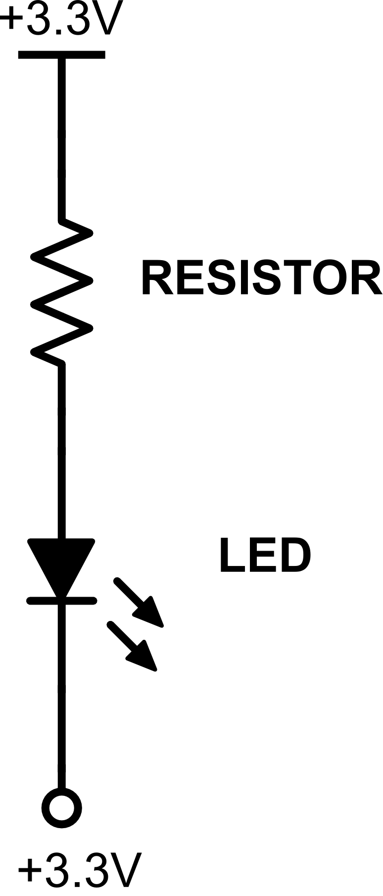

So far, we’ve discussed some basics of software programming, we’ve discussed electricity and circuits and we’ve even written our first program and built our first circuit. But, the point of the RaspberrySTEMTM platform is the integration of the software and hardware, and more specifically, using software to control the hardware to make it do interesting and useful things.
In this project, for the first time, we’ll use the software to control the hardware. And, that’s where General Purpose Input/Outputs (GPIOs) come into play.
GPIOs are specific pins (little metal "legs" on the bottom or sides of a computer chip) that give us a connection between a physical circuit and the software inside the chip. We make these connections to the computer chip available on the RaspberrySTEM by plugging wires into the connector board holes. While we could get access to this functionality by individually attaching pins on the Raspberry Pi to the breadboard using wires, we've made these connections available through the connector board to make the whole process much cleaner and easier. In fact, that's why we have the ribbon cable connected from the Raspberry Pi to the connector board -- the ribbon cable simply brings the GPIO pins (and other pins) from the Raspberry Pi to the RaspberrySTEM Lid, where there are easier for you to attach to.
The purpose of GPIOs are like the nerve-system of the platform – their job is to relay signals from the brain (the Raspberry Pi computer) to the muscles (the components of the circuit) and to take signals from the muscles and relay it back to the brain.
The Raspberry Pi has 26 GPIOs, and each one can be set to act as an input (it can take a signal from somewhere else and relay it to the Raspberry Pi) or set to act as an output (it can relay a signal from the Raspberry Pi to somewhere else). GPIOs are referenced as number (for example, GPIO17), and each pin (hole) on the connector board is labeled with the GPIO it is connected to. So, if you want to hook up a component to GPIO17, you'll insert a wire from the component to the hole on the connector board labled "17".
When a GPIO is configured as an output, the software has the ability to set the GPIO to do one of two things:
Set the voltage to 0V (so that it acts just like a ground)
Set the voltage to 3.3V (so that it acts just like a battery or some other power source)
By switching the GPIO “on” or “off,” it can be used to control components on the breadboard or elsewhere.
As a very simple example, you could hook a GPIO to an LED, and then control whether the LED was turned on or off by turning the GPIO on or off. In fact, since we’ve already built a circuit with an LED, why don’t we modify it to use a GPIO so that we can control that LED through software…
Here is the schematic from our original circuit:
To attach the LED to a GPIO, we’re going to modify our circuit as follows:

Schematic: Lighting an LED with a GPIO
You’ve probably noticed that all we did was replaced the connection from the LED to ground with a connection from the LED to a GPIO. Let’s see how this will work…
We’ve already discussed that the software can force the GPIO into one of two states:
Set the voltage to 0V (so that it acts just like a ground)
Set the voltage to 3.3V (so that it acts just like a battery or some other power source)
If the software sets the GPIO to 0V (we call this setting the GPIO “low”), the GPIO acts just like a ground, and the LED will light up just like it currently does. But, if the software sets the GPIO to 3.3V (we call this setting the GPIO “high”), the LED will not light up.
If that’s confusing, think back to our earlier discussion – electricity will only flow between two points where there is a voltage difference. If there is 3.3V on one side of the circuit coming from the power source and there is 3.3V on the other side of the circuit coming from the GPIO, there is no voltage difference between the beginning and end of the circuit, and no electricity will flow (i.e., the LED won’t light up).
This can be a confusing concept at first, but stick with us and it will become more clear. Here is a overview of how the GPIO will work in this circuit:
|  |  |
| Schematic: GPIO set high (LED off) |
Schematic: GPIO set low (LED on) |
You may have noticed in the images above that, to turn the LED on, you need to set the GPIO low (0, Ground). And, to turn the LED off, you need to set the GPIO needs to be set to high (1, Power). Clearly, this sounds a little reversed, but you can see from the images above that this is how it works. It is a reversed way of using a GPIO, but it's pretty standard. And it's called "Active Low." A GPIO that is Active Low is turned "on" when the GPIO is set low, and "off" when the GPIO is set high.
The reverse of this is called "Active High" -- a GPIO that is Active High is turned "on" when the GPIO is high, and "off" when the GPIO is low.
Now that we have the
basic concept of how we can control our LED with a GPIO, let’s give
it a try…
Step #1: Connect the circuit to a GPIO instead of ground.
Find the wire that attaches the blue ground row to the 3.3V on the connector board. Remove the wire from the 3.3V hole and insert it into any of the numbered holes on the connector board (these are the GPIOs). For this project, I will assume that you’re using GPIO14 on the connector board, though you’re welcome to use any GPIO (you’ll just need to modify the code appropriately if you choose a GPIO other than 14 for this project).
This is what your breadboard should now look like:

You will probably notice that the LED is not lit at this point, even though we've hooked it up to the GPIO. The reason for this is that the GPIO is designed internally so that, by default (if it's unconnected to anything), it reads a high voltage. As we discussed above, if the GPIO voltage is high, there is no voltage difference between the start and end of the circuit, and no electric current will flow -- the LED will not light up.
When the button is pressed, the internal components of the GPIO get connected (physically) to ground, which makes it read a low voltage. At that point, electric current will flow and the LED will illuminate.
Again, this can be a bit confusing at first, but as you use GPIOs more and more, the concepts and the conventions should become clearer.
Now that our circuit is complete, let’s write the software…
Step #2: Write the code.
The code to control the GPIO (and with it the LED) is pretty short.
Type (or cut-and-paste) the following code into the your IDE’s Code Window:
Don't feel bad if you don't understanding anything going on in this code. Our goal is to get you doing some fun stuff early on, and that means using some programming concepts that we haven't yet discussed. The code above will make a lot more sense later, but for now, we just want to give you a taste of how software and hardware can work together.
Step #3: Run the code.
Run the code the same way you did in the Hello, World! project – press the Play icon above the code window. Assuming you did everything correctly, the LED should now be lit.
Congratulations! You just controlled some hardware you built using
software that you wrote. This is the foundation for how
many electronic devices and toys are made these days, and have
accomplished something that even many experienced engineers don't
understand.
Step #4: Play around with it.
Assuming everything worked properly in the previous step, feel free to play around with the circuit and the code. Try changing from GPIO14 to a different GPIO (make sure you change the code to reflect the new GPIO). Or try turning off the LED by replacing the my_led.on() statement with:
In the previous section, we saw how GPIOs can be used as outputs to control components attached to the Raspberry Pi. In addition, GPIOs can be used as inputs to take information from external components; that input can then be acted upon by the Raspberry Pi and appropriate actions can be taken.
Much like GPIO outputs work by simply setting a voltage on the GPIO pin to either 0V or 3.3V, GPIO inputs work by reading the voltage – either 0V or 3.3V – being sent to the GPIO pin.
For example, a GPIO can be used to get the current state of a button or switch (pressed or unpressed). Based on the current state, the software can take appropriate action.
"State" is a common term using in electronics and just means the current condition or situation of a component or circuit.
For
example, in the case of a button or switch, state would refer to
whether the button is currently being pressed or unpressed. For
an LED, state might refer to whether the LED was illuminated or not.
GPIOs as inputs are very powerful, and we’ll be using them in many future projects, including some upcoming projects related to buttons/switches.